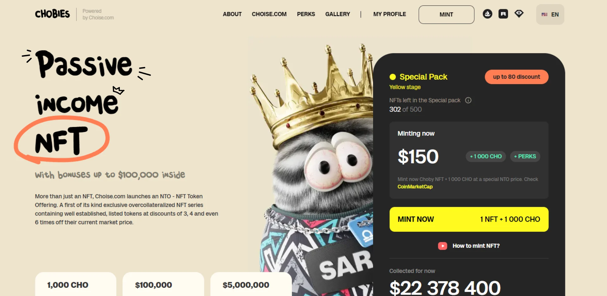
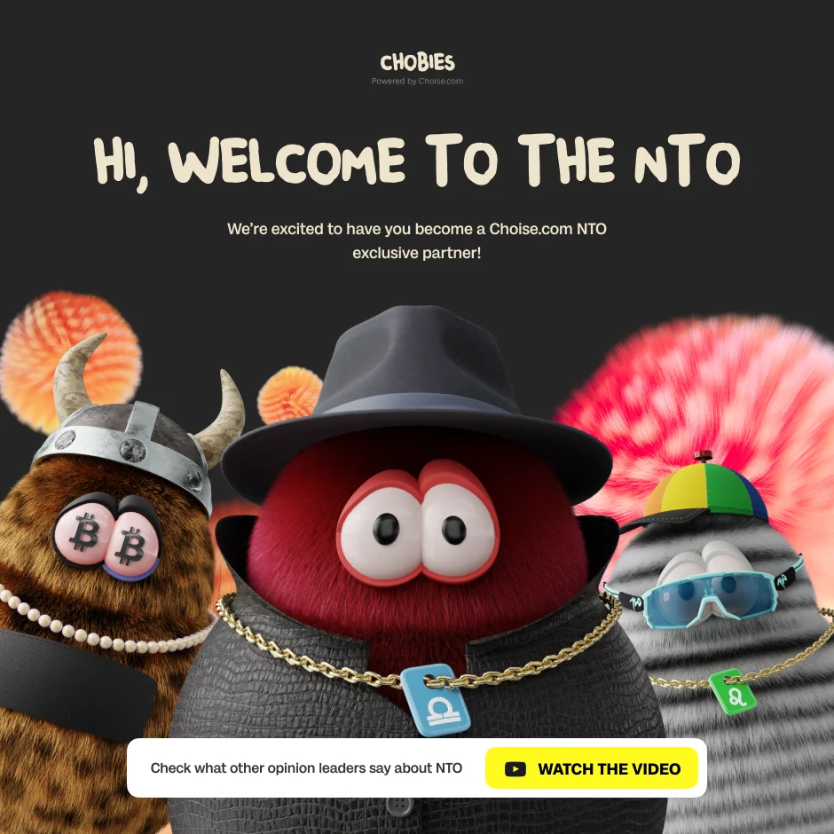
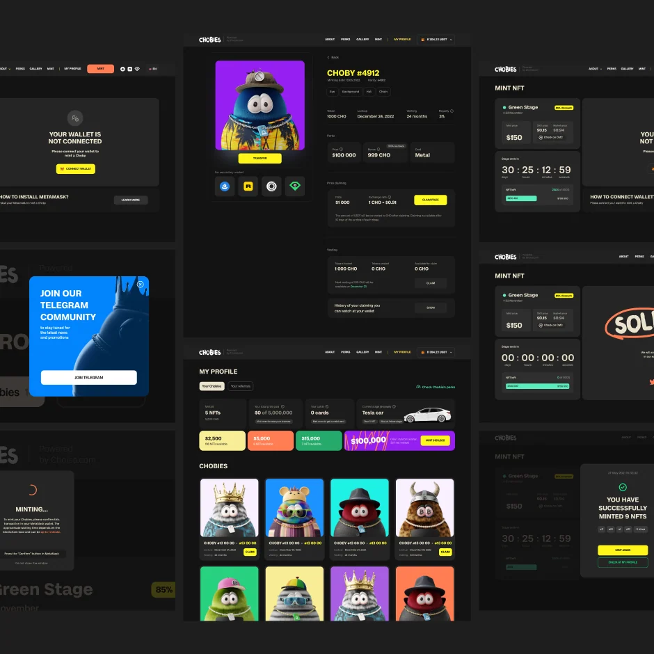
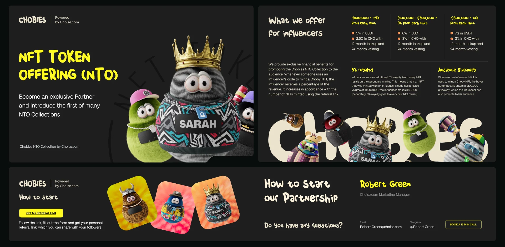

Chobies NTO
Web3-вселенная NFT-персонажей и первый формат NTO — от идеи до запуска.
Chobies — один из самых сложных моих проектов с точки зрения системного дизайна. Для экосистемы Choise я собрал генеративную систему персонажей для первого формата NTO (NFT Token Offering), объединяющего NFT и токенизированную экономику.
Задача была не нарисовать набор картинок, а собрать полноценный цифровой продукт — с цельной идентичностью и понятным путём пользователя от входа до покупки.
Система включала более 500 параметров и собирала 1014 уникальных персонажей из десятков независимых признаков. Помимо генеративной части я сделал сайт с дашбордом минтинга, анимационные ролики, динамические баннеры и контент для соцсетей.
Проект собрал заметную аудиторию и принёс доход и бренду, и держателям NFT. Для меня это стало мощной школой создания цифрового продукта с нуля.
- Генеративная система: десятки независимых признаков — лица, глаза, одежда, аксессуары, фоны, цвета.
- Сайт и дашборд минтинга и отслеживания активов.
- Анимационные ролики и рекламные кампании в едином языке.
- Первый формат NTO: NFT и токенизированная экономика.



